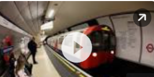
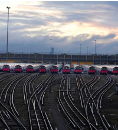

Planned train strike dates in November 2022 and when the next rail walkout is
2 days ago

UK train drivers to stage fresh 24-hour strike on 26 November
3 days ago — UK train drivers to stage fresh 24-hour strike on 26 November. Aslef union says drivers at 12 companies will take action over pay.
3 days ago — The London bus workers will strike on November 22, 25, and 26 and on December 1, 2, 3, 9, 10, 16 and 17. Members of Unite employed by Abellio in …
Train strikes: Aslef announce strike action on November …
3 days ago — Train drivers at 12 operators are to strike on Saturday, November 26 in the long running dispute over pay, Aslef announced on Thursday.
Everything you need to know about the UK's November train strikes
3 days ago — When are the next train strikes in November 2022? ... Train drivers at 12 operators are planned to strike on November 26. Members of the ASLEF …

Members of the ASLEF union will take strike action on Saturday 26 November. As a result, EMR will not operate any services on this day. More details will be …

Last updated: Friday, 11 November 2022. Rail union, RMT, recently announced upcoming strike action. Here are some details around the announced upcoming …

Rail Strike Travel Information | Disruptions & Refunds
When is the train strike? One upcoming rail strike has been announced. Certain train operators will be impacted on Saturday 26th November 2022. How …
31 Oct 2022 — More on Rail Strikes ... A member of staff signals to a train at King’s Cross railway. Train drivers from 12 companies to go on strike again …
Train strike dates: When the next rail strikes are in November 2022 and how trains are …
3 days ago — Train drivers with 12 rail companies represented by the Aslef union have announced a major strike on Saturday 26 November.
UK union suspends November rail strikes to hold pay talks
4 Nov 2022 — LONDON, Nov 4 (Reuters) - Three days of strikes by tens of thousands of British rail workers over the next week have been suspended while …
Train drivers at 12 UK operators to strike on Nov. 26
3 days ago — Drivers working for 12 British train operators will go on strike on Nov. 26 in an ongoing dispute over pay, the Associated Society of …
Train strikes called off after union secures 'intensive negotiations with rail bosses'
4 Nov 2022 — Strikes had been planned by staff working for Network Rail on 5, 7 and 9 November, with staff at 14 train operators stopping work on 5 and 9 …

Industrial action - Travel information
Wednesday 9 November. Strike action on this day has been cancelled. LNER will now be running a largely normal timetable on Wednesday 9 November.
When are the next public transport strikes? November 2022 dates
3 days ago — The unions are in an ongoing dispute with the government and rail companies about pay, job cuts, and changes to terms and conditions – with a …
Is there a train strike today? Wednesday, November 9 rail action latest
5 days ago — However, the planned strikes for today (November 9) have been cancelled meaning there are no planned train strikes scheduled for today.

Last updated 11 November 2022 · There will be no Southeastern services running on the rail network. For alternative transport options visit traveline. · We will …

Strike action | Travel Information
Impact from the cancelled strike action of 5, 6, 7, and 9 November has now concluded. If your journey was affected on these dates, please see below for your …

Train strike | Everything you need to know | Northern
We have been made aware of ASLEF strike action on 26 November 2022. We will update this page with more information as soon as possible but we anticipate ..